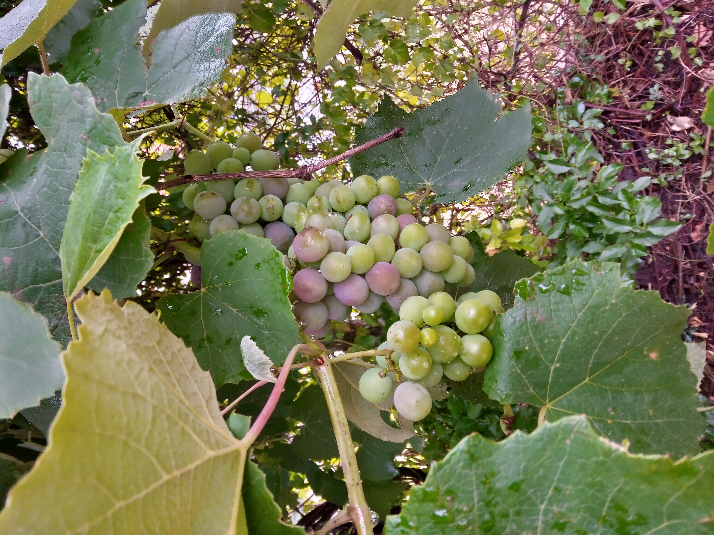
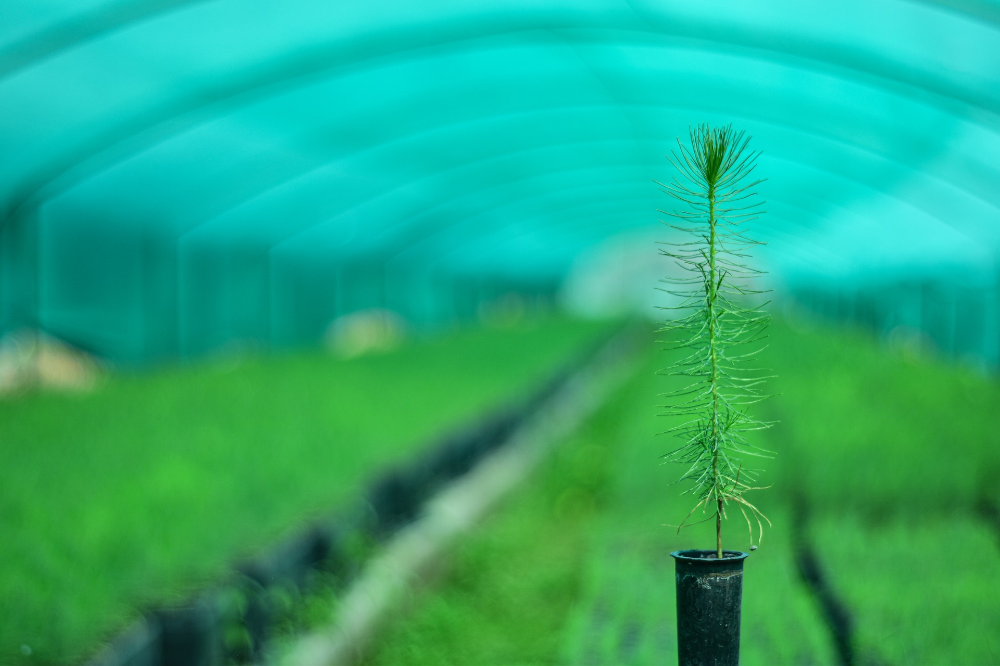

Áreas de Especialización
Soluciones integrales para cada etapa de tu proyecto
Vivero Especializado
Plantines, semillas y especies forestales de alta calidad para reforestación y paisajismo
Ver productos →Agroquímicos
Fungicidas, herbicidas e insecticidas de primeras marcas para protección de cultivos
Ver catálogo →Servicios Profesionales
Poda, paisajismo, consultoría y manejo integral de proyectos forestales
Ver servicios →Producción y Venta de Plantas
Calidad garantizada en cada especie, desde plantines hasta árboles maduros

Plantas Ornamentales
Especies seleccionadas para embellecer jardines y espacios verdes, adaptadas a diferentes climas y suelos.
- 🌺 Plantas florales estacionales
- 🌿 Arbustos decorativos
- 🎍 Plantas de interior y exterior
- 🌹 Rosales y especies aromáticas

Árboles Frutales
Variedades de alta productividad para huertas familiares y producción comercial.
- 🍎 Frutales de carozo y pepita
- 🍋 Cítricos adaptados al clima
- 🥑 Especies subtropicales
- 🌰 Frutos secos y berries

Plantas Nativas
Especies autóctonas para reforestación y conservación de ecosistemas locales.
- 🌳 Especies forestales nativas
- 🦋 Plantas para polinizadores
- 💧 Especies resistentes a sequía
- 🌱 Producción sustentable
Beneficios de Comprar en Nuestro Vivero
Calidad Garantizada
Todas nuestras plantas pasan por estrictos controles de calidad
Envío a Domicilio
Servicio de entrega en toda la región con cuidado especial
Asesoramiento Expertos
Recomendaciones personalizadas para cada proyecto
Sustentabilidad
Producción responsable y prácticas eco-amigables
Protección Profesional para Cultivos
Productos de primeras marcas para el manejo integrado de plagas y enfermedades
Fungicidas
Control efectivo de enfermedades fúngicas en todo tipo de cultivos
- Sistémicos de amplio espectro
- Contacto y preventivos
- Específicos por cultivo
- Baja toxicidad ambiental
Insecticidas
Soluciones para el control de insectos plaga con mínimo impacto ambiental
- Biológicos y orgánicos
- Químicos selectivos
- Control de resistencia
- Aplicación foliar y sistémica
Herbicidas
Manejo eficiente de malezas con productos específicos por tipo de cultivo
- Pre-emergentes y post-emergentes
- Selectivos y no selectivos
- Residuales y de contacto
- Para barbecho y cultivos
Marcas con las que trabajamos
Expertos en Manejo Forestal y Paisajismo
Servicios especializados ejecutados por profesionales certificados
Poda y Tala Controlada
Manejo profesional de arbolado urbano y forestal con técnicas seguras y sostenibles
- Poda formativa y sanitaria
- Tala dirigida con grúa
- Manejo de residuos forestales
- Evaluación de riesgo arbóreo
Diseño de Paisajismo
Creación de espacios verdes funcionales y estéticos adaptados a cada entorno
- Diseño conceptual y ejecutivo
- Selección de especies apropiadas
- Planos y documentación técnica
- Supervisión de implementación
Consultoría Forestal
Asesoramiento técnico para optimización de proyectos forestales y agrícolas
- Planificación forestal
- Estudios de productividad
- Gestión sostenible
- Certificaciones ambientales
¿Necesitas Asesoramiento?
Nuestros expertos están listos para ayudarte a elegir los mejores productos y servicios para tu proyecto